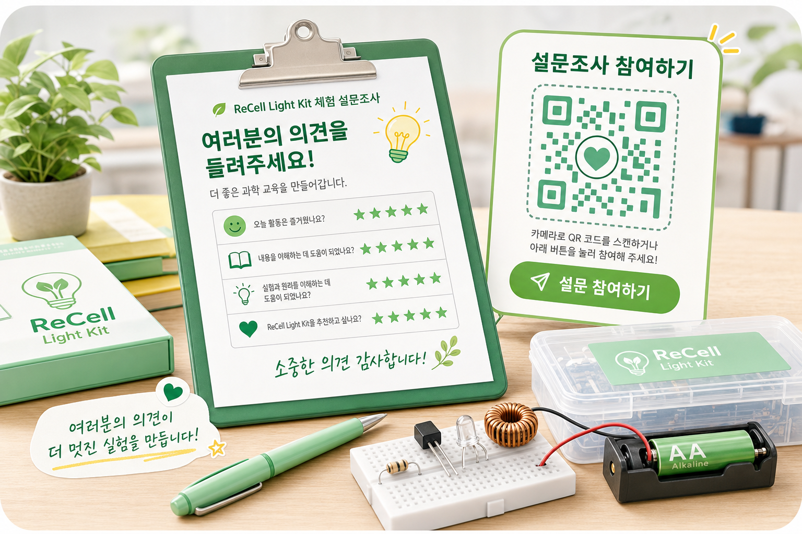
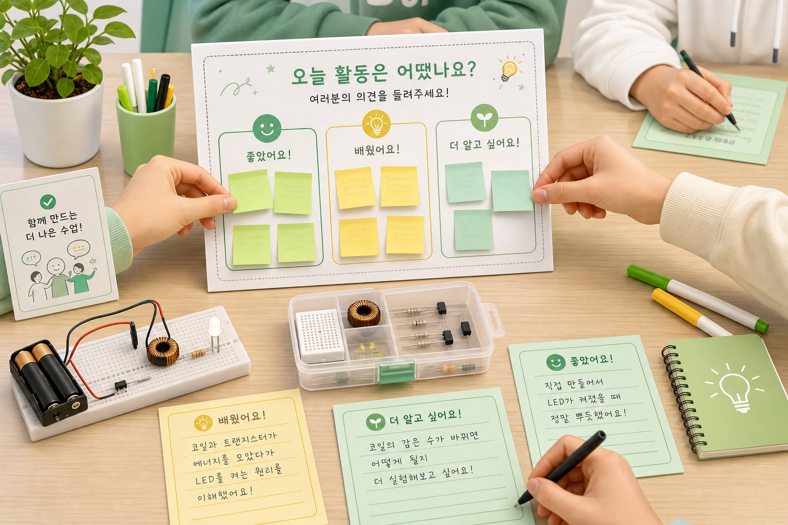

설문조사
체험 후 피드백이 키트를 더 좋게 만듭니다
설문은 교육센터 실습 후 학생들이 어려웠던 부분, 재미있었던 부분, 개선하면 좋을 점을 모으기 위한 단계입니다.

설문 전 안내
- 조립이 쉬웠는지, 어려웠는지 표시합니다.
- Joule Thief 원리를 이해하는 데 도움이 되었는지 답합니다.
- LED가 안 켜졌을 때 문제 해결 안내가 충분했는지 확인합니다.
- 다음 교육에서 보완하면 좋을 점을 자유롭게 적습니다.
